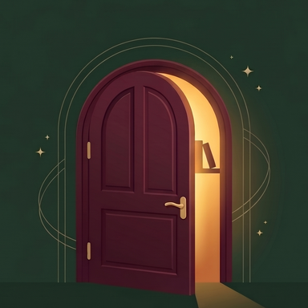

Book KeeperQuestionnaire privacy
Last updated: 11 November 2026.
In short: your answers are only used to better understand how people note down their reading. The Book Keeper team reads them; they are never sold or shared. You can ask us to delete them at any time.
Who is responsible?
Zakaria Maz, publisher of Book Keeper. Contact: contact@bookkeeperapp.app.
What information is kept?
- Your first name or nickname, if you write one (optional).
- Your age range. The questionnaire is for people aged 15 and over: by ticking the box at the start, you confirm that you are 15 or older.
- Your answers to the questions about your reading.
- Your email address, only if you say you want to try the app. It is only used to let you know.
- The date and time of your answers, and the language you used (French or English).
Why?
To understand readers' needs before the app is finished. Nothing else: no advertising, no resale, no profiling. The legal basis is your consent, which you give by ticking the box at the start.
Where are they stored, and who reads them?
In a private Google Sheets spreadsheet, on the publisher's Google account. Google provides this tool and may see technical information related to the submission (such as the IP address of your connection). Only the Book Keeper team has access to the spreadsheet.
For how long?
Until the app is released at the latest. After that, the spreadsheet is deleted. Answers are not kept beyond that.
What are my rights?
You can ask to see your answers, correct them or delete them by writing to contact@bookkeeperapp.app. If you are not satisfied, you can also complain to your data protection authority (in France, the CNIL: cnil.fr).
Cookies and trackers
This page and the questionnaire use no cookies, no analytics tool, and no external font or script. Your answers stay in the page until you send them.